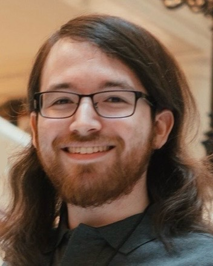

Hi there, I'm Adam Leif, a PhD student in UCLA's Department of Linguistics. I'm interested in syntax, computational linguistics, and sentence processing. At the moment, I'm working on a treatment of my honors thesis from my senior year with Masaya Yoshida for publication, which includes some additional experimentation and theoretical considerations. I'm also doing my Master's (advised by Tim Hunter, Laurel Perkins, and Megha Sundara), a project that seeks to expand on Mintz (2003)'s frequent frames.
As an undergraduate at Northwestern University, I was advised by and worked with both Rob Voigt and Masaya Yoshida.
Outside of my academic pursuits, I'm a big TTRPG fan, a medium-time board game enjoyer, and a passable video game player. I also take pictures sometimes.
You can contact me at: adamleif [at] ucla [dot] edu.